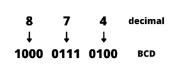
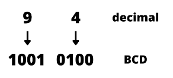
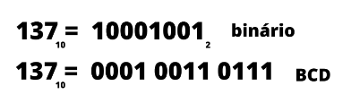

A representação de número, letras ou mesmo palavras por um grupo especial de símbolos é chamado
de código. Um dos mais populares é o código Morse, que utiliza pontos e traços para representar
as letras do alfabeto.
Nós já vimos que qualquer número pode ser representado por um representante equivalente em
binário, afinal todo sistema digital utiliza alguma forma da numeração binária em suas operações
internas. No entanto, a conversão decimal-binário pode se tornar longa e complicada para números
grandes e como o número é naturalmente decimal foi encontrada uma forma de codificar números
decimais combinando as características dos dois sistemas.
◉ Decimal codificado em binário (BCD)
Se ao invés de converter um número decimal em binário, optarmos por converter cada dígito do
número decimal por seu equivalente em binário. O resultado será um decimal codificado em binário
(BCD — binary-coded-decimal).
Em decimal um dígito pode ter no máximo o valor 9, logo são necessários 4 bits para codificar
cada dígito (onde 9 é 1001). Para ver na prática como seria essa conversão temos como exemplo
o número decimal 874, com cada dígito convertido no equivalente binário, temos:

A lógica é aplicada para qualquer número, abaixo temos 94 como exemplo:

Note que sempre serão utilizados 4 bits para representar cada dígito, mas há no máximo 9 dígitos
para representar. Ou seja, não se utiliza os números 1010, 1011, 1100, 1101, 1110 e 1111 e o
aparecimento de qualquer um deles em uma máquina que use o código BCD, é, geralmente, uma
indicação de que ocorreu algum erro.
➤ Comparação entre BCD e binário
É preciso destacar que o BCD não se trata de outro sistema de numeração (como binário, decimal
e hexadecimal), é basicamente um sistema decimal em que cada dígito está escrito em binário.
Além disso, um número BCD não é a mesma coisa de um número binário puro. Onde binário puro seria
o número decimal por completo representado em binário, não somente os dígitos. Para visualizar
melhor a diferença temos a conversão do número 137 para binário e BCD abaixo:

Observe que no BCD são necessários 12 bits, enquanto que no binário apenas 8. Em contrapartida, a
conversão decimal-BCD é bem mais simples que a decimal-binário.